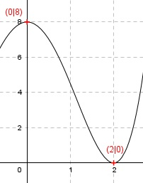

Aufgabe 100 Der Graph einer achsensymmetrischen ganzrationalen Funktion 4. Grades berührt bei x = 2 die x-Achse und geht durch den Punkt (0|8). Wie lautet seine Funktionsgleichung?  Allgemeine Form einer achsensymmetrischen ganzrationalen Funktion 4. Grades: f(x) = ax4 + cx2 + e f’(x) = 4ax3 + 2cx f’’(x) = 12ax2 + 2c 3 Bedingungen: 1. Berührt bei x = 2 die x-Achse bedeutet zum einen: f(2) = 0 --> a * 24 + c * 22 + e = 0 --> 16a + 4c + e = 0 I 2. Berührt bei x = 2 die x-Achse bedeutet zum anderen: f’(2) = 0 --> 4a * 23 + 2c * 2 = 0 --> 32a + 4c = 0 II 3. Geht durch den Punkt (0|8) bedeutet: f(0) = 8 --> a * 04 + c * 02 + e = 8 --> e = 8 I * (-2) (e = 8 eingesetzt) + II -32a - 8c - 16 = 0 32a + 4c = 0 ------------------- -4c - 16 = 0 |+16 -4c = 16 |:(-4) c = -4 c = - 4 in II eingesetzt. 32a + 4 * (-4) = 0 32a - 16 = 0 |+16 32a = 16 |:32 a = 0,5 Gesuchte Funktionsgleichung: f1(x) = 0,5x4 - 4x2 + 8 Alternative Lösung: Berührpunkt (doppelte Nullstelle) bei x = 2 entspricht den Linearfaktoren von (x - 2)2 Wegen Achsensymmetrie gibt es einen Berührpunkt bei x = -2, entspricht den Linearfaktoren von (x + 2)2 f(x) = a * (x + 2)2(x - 2)2 Punktkoordinaten (0|8) eingesetzt: 8 = a * (0 + 2)2(0 - 2)2 8 = a * 4 * 4 8 = a * 16 | :16 a = 0,5 f(x) = 0,5 * (x2 + 4x + 4)(x2 - 4x + 4) f(x) = 0,5 * (x4 - 8x2 + 16) f(x) = 0,5x4 - 4x2 + 8